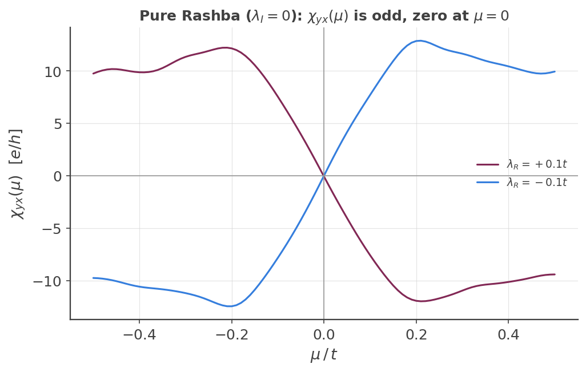

Rashba-Edelstein Effect
Rashba-Edelstein effect: spin density from a bare-density vertex¶
The custom-vertex spin Hall page builds the spin current vertex
\(\tfrac12\{\hat v_x,\hat s_z\}\). This page uses the same custom_two() Kubo-Bastin
machinery with a different vertex — the bare spin density \(\hat s_x\), with no velocity
symmetrization — to compute the Rashba-Edelstein effect (REE): the spin-density response
\(\chi_{yx}=\partial\langle\hat s_x\rangle/\partial E_y\) to an in-plane electric field, present
only when inversion symmetry is broken. (For how the raw \(\Gamma_{mn}\) moment matrix is turned
into this response, see the general Kubo-Bastin reconstruction rule and
KITE-tools --CustomTwo.)
What is the Rashba-Edelstein effect?¶
The Edelstein effect (also called the inverse spin galvanic effect) is the generation of a net, spatially uniform spin polarization by an applied electric field, in any system where spin-orbit coupling breaks inversion symmetry. Unlike the spin Hall effect, which generates a transverse spin current while the net spin density stays zero, the Edelstein effect produces spin density directly in the bulk, with no spin current required.
Semiclassically, to linear order in the field: inversion-breaking spin-orbit coupling (Rashba, here) locks each electron's spin direction to its momentum. In equilibrium, time-reversal symmetry pairs \(+\mathbf k\) and \(-\mathbf k\) states with opposite locked spins, so the populations cancel and there is no net polarization. An electric field shifts the whole Fermi surface in \(k\)-space; because spin is locked to momentum, this shift leaves an uncompensated spin population near the shifted edge, producing a net, field-aligned in-plane spin density \(\mathbf S\propto\hat z\times\mathbf E\) (for a 2D Rashba system with \(\hat z\) the out-of-plane normal). This is the microscopic spin-generation step behind spin-orbit torque (when the accumulated spin acts on an adjacent ferromagnet) and spin-charge interconversion more broadly — the subject of the Medina Dueñas et al. paper1 this example follows.
The two spin-orbit terms, and why only one gives REE¶
The lattice is the same spin-doubled honeycomb model as
the spin Hall page (Aup, Bup, Adn, Bdn), with two spin-orbit
terms that can be switched on independently:
- Kane-Mele intrinsic SOC (\(\lambda_I\), next-nearest-neighbor, spin-diagonal, opposite phase per spin) — inversion-symmetric. It opens a gap and drives the quantized spin Hall response, but by itself must contribute zero to any spin-density response to a field: it cannot distinguish "spin up here" from "spin up there," so it cannot polarize.
- Rashba SOC (\(\lambda_R\), nearest-neighbor, spin-flip, direction-dependent) — inversion-breaking. This is the actual source of REE.
The vertex¶
examples/rashba_edelstein_graphene.py defines:
A = custom.Vertex(moments, [[1.0, "l0"]]) # bare s_x, no velocity symmetrization
B = custom.Vertex(moments, [[1.0, "vy"]]) # charge velocity
\(\hat s_x=\tfrac12\sigma_x\) is off-diagonal in the up/down sublattice basis (unlike \(\hat s_z\), which is diagonal on the spin Hall page) — registered as
calculation.add_orbital_coupling('Adn', 'Aup', 0.5, 'l0')
calculation.add_orbital_coupling('Aup', 'Adn', 0.5, 'l0')
calculation.add_orbital_coupling('Bdn', 'Bup', 0.5, 'l0')
calculation.add_orbital_coupling('Bup', 'Bdn', 0.5, 'l0')
Custom-operator labels are positional, not arbitrary names
The trailing digit in a label like "l0" is read back by KITEx with std::stoi and used directly as a 0-indexed lookup into the vector of registered operator
matrices (act_with_stream, Src/Simulation/Custom/SimulationRankOne.cpp).
Since only one custom operator is registered in this example, it must be called
"l0" — calling it "l1" (as if it were an independently-chosen name)
segfaults, an out-of-bounds vector access, not merely a cosmetic misnaming.
The Rashba hopping term¶
On the honeycomb lattice, the Rashba nearest-neighbor hopping is complex and depends on the bond direction. For a bond with unit vector \(\hat d=(d_x,d_y)\), the spin-flip amplitude is
applied to the three nearest-neighbor bonds, which point at \(90°,-30°,-150°\).
Default parameters: pure Rashba, no Kane-Mele¶
examples/rashba_edelstein_graphene.py's main() defaults to
\(\lambda_I=0\) (t2=0) — Kane-Mele SOC is switched off. This isn't just a simpler
starting point: with \(\lambda_I=0\) the model is particle-hole symmetric, so \(\chi_{yx}(\mu)\) must
be an odd function of \(\mu\) with a genuine zero at \(\mu=0\) — a much sharper, cleaner
structural target than anything involving the Kane-Mele gap. Turning \(\lambda_I\) on reintroduces a
bulk gap and van Hove singularities in the band structure (confirmed directly: kite.visualize.plot_bands/compute_bands on this lattice show a sharp DOS peak exactly
where \(\chi_{yx}\)'s largest feature sits), which is real physics but makes the basic sign/symmetry
check harder to read at a glance.
The lattice is \(128\times128\) unit cells (nx=ny=2 domain decomposition), with a small
amount of Anderson disorder (disorder_w=0.05, uniform, all four sublattices,
num_disorder_=4 realizations) — this smooths out the sample-to-sample oscillations
visible in a fully clean, small-num_random_ reconstruction, the same lesson already
learned for haldane_orbital_magnetization.py and
kane_mele_spin_hall.py. num_random_=50 and moments=256
are unchanged.
Validation¶
Three structural checks, cheap and independent of any absolute-normalization ambiguity:
- \(\lambda_R\neq0\): REE response should be nonzero.
- \(\lambda_I=0\) (particle-hole symmetric): \(\chi_{yx}(\mu)\) must be odd in \(\mu\), with a genuine zero at \(\mu=0\).
- Flipping the sign of \(\lambda_R\) must flip the sign of \(\chi_{yx}\) at every \(\mu\): the Rashba term's helicity reverses, so the induced spin density \(\mathbf S_\text{REE}\propto\hat z\times\mathbf E\) reverses too — the same sign-inversion signature shown in Fig. 2(a) of Medina Dueñas et al.1

Checks (1)–(3) are all visibly satisfied: both curves are clearly nonzero, and they are exact mirror images through the origin.
Example
Get more familiar with KITE: run examples/rashba_edelstein_graphene.py
and its post-processing yourself, and try turning Kane-Mele SOC back on (t2!=0) to
see the bulk gap and van Hove features reappear in \(\chi_{yx}(\mu)\).
-
J. Medina Dueñas, S. Giménez de Castro, J. H. García, and S. Roche, "Optimal spin-charge interconversion in graphene through spin-pseudospin entanglement control," Commun. Phys. (2026) (arXiv:2510.21240). ↩↩